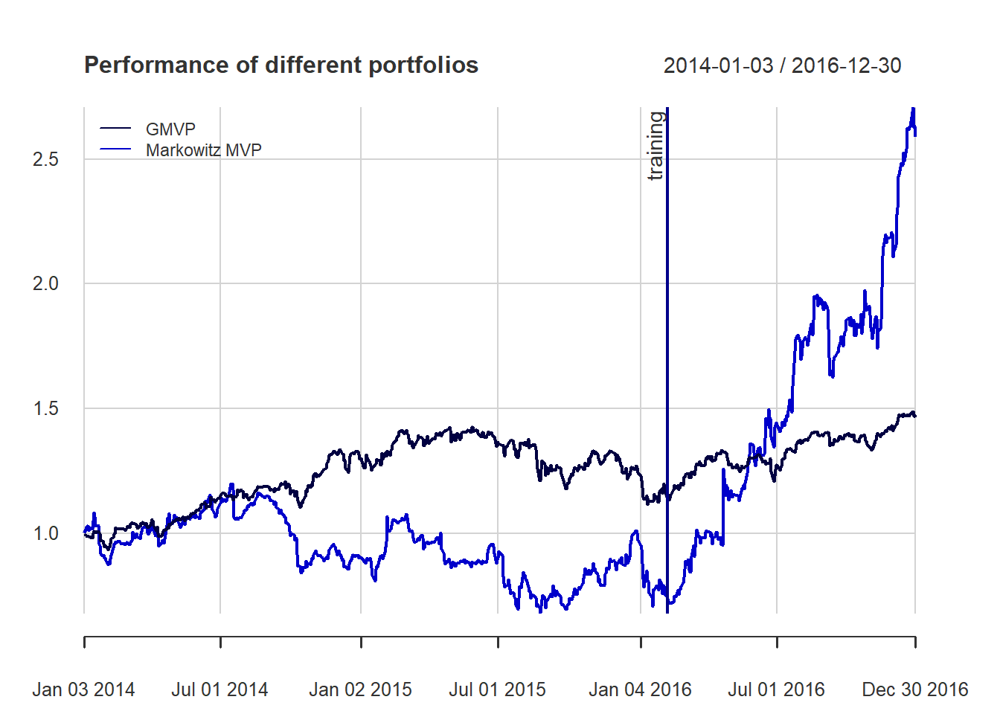

Chapter 2 Portfolio basics
Here is a rough review of some basics concepts in portfolio
2.1 Return
An easy asset pricing model is assuming log-price as a random walk:
TODO MC simulation for random walk
TODO SP500 log price graph
\[ \begin{align*} y_{t} &\triangleq\log p_{t}\\ y_{t} &=\mu+y_{t-1}+\epsilon_{t} \end{align*} \]
In practice, for stocks, log-returns are used for the modeling since they are “stationary”
2.1.1 Stylized facts
Rama (Cont 2001) presents a set of stylized empirical facts emerging from the statistical analysis of price variations in various types of financial markets.
Here, we illustrate with some examples.
Data preparation:
from <- "2016-01-01"
to <- "2020-10-30"
ticker <- "^GSPC"
SP500_index <- get_data(ticker, from, to)
X_log_sp <- CalculateReturns(SP500_index, "log") %>% na.omit()2.1.1.1 Stationary
Figure 2.1: S&P 500 price and log return
2.1.1.2 Autocorrelation
Figure 2.2: Autocorrelation of S&P 500 log-returns
2.1.1.3 Non-Gaussianity and asymmetry
Figure 2.3: Histograms of S&P 500 log-returns compared with normal distribution
2.1.1.4 Conditional heavy-tailness
Since longer timescale can be considered a sum of random variables (log-return) then, provided its conditions hold, the Central Limit Theorem should come into effect and the distribution of log-returns should tends towards Gaussian as timescale increases.
Figure 2.4: QQ plots of S&P 500 log-returns
We observe that the heavy tails occurs less frequently when the horizon increases, especially on the right side (strong positive return) of the distribution
2.1.1.5 Volatility clustering
Figure 2.5: S&P 500 log-returns (volatility clustering)
2.1.1.6 Frequency of data
Low frequency (weekly, monthly): Gaussian distributions seems to fit reality after correcting for volatility clustering (except for the asymmetry), but the nonstationarity is a big issue
Medium frequency (daily): definitely heavy tails even after correcting for volatility clustering, as well as asymmetry
High frequency (intraday, 30min, 5min, tick-data): below 5min the noise microstructure starts to reveal itself
2.1.2 Portfolio return
The portfolio return is
\[R_{t}^{p}= \frac{\sum_{i=1}^{N}Bw_{i}\left(R_{it}+1\right)-B}{B}=\sum_{i=1}^{N}w_{i}R_{it}\approx\sum_{i=1}^{N}w_{i}r_{it}=\mathbf{w}^{T}\mathbf{r}_{t}\]
2.1.2.1 Log-return or simple return?
From perspective of portfolio construction, we should use the simple return to estimate its moments: \(\textsf{E}\left[\mathbf{R}_{t}\mid\mathcal{F}_{t-1}\right]\) and \(\textsf{Cov}\left[\mathbf{R}_{t}\mid\mathcal{F}_{t-1}\right]\) instead of the ones for the log-retruns \(\boldsymbol{\mu}\) and \(\boldsymbol{\Sigma}\)
Fortunately, the can be related as follows:
\[\begin{aligned} \mathbf{R}_{t} &= \exp\left(\mathbf{r}_{t}\right)-1 \\ \textsf{E}\left[\mathbf{R}_{t}\mid\mathcal{F}_{t-1}\right] & =\exp\left(\boldsymbol{\mu}+\frac{1}{2}\textsf{diag}\left(\boldsymbol{\Sigma}\right)\right)-1\\ \textsf{Cov}\left[\mathbf{R}_{t}\mid\mathcal{F}_{t-1}\right]_{ij} &= \exp\left(\mu_{i}+\mu_{j}+\frac{1}{2}\left(\Sigma_{ii}+\Sigma_{jj}\right)\right)\times\left(\exp\left(\Sigma_{ij}\right)-1\right). \end{aligned}\]
Data description:
TODO add links with these tickers
- sector technology: AAPL, AMD, ADI.
- sector healthcare: ABBV, AEZS, A.
- sector basic materials: APD, AA, CF.
Data preparation:
from <- "2016-01-01"
to <- "2020-10-30"
tickers <- c("AAPL", "AMD", "ADI", "ABBV", "AEZS", "A", "APD", "AA","CF")
assign_variable_global_env(tickers, from, to, ratio = 0.7)Take mean-variance portfolio (MVP) for illustration, the optimization problem is as follows:
\[\begin{array}{ll} \underset{\mathbf{w}}{\textsf{maximize}} & \mathbf{w}^{T}\boldsymbol{\mu}-\lambda\mathbf{w}^{T}\boldsymbol{\Sigma}\mathbf{w}\\ \textsf{subject to} & \mathbf{1}^T\mathbf{w}=1. \end{array}\]

#> MVP_lin MVP_log MVP_log_trans
#> Annualized Sharpe Ratio (Rf=0%) 1.288839 0.9953928 1.226824
#> MVP_lin MVP_log MVP_log_trans
#> Annualized Sharpe Ratio (Rf=0%) 1.462684 1.048542 1.451949
#> MVP_lin MVP_log MVP_log_trans
#> Annualized Sharpe Ratio (Rf=0%) 1.39683 1.217381 1.610518For the mean-variance portfolio, which uses the expected return, there is some small difference and the methods can be easily ranked:
- the best method is to properly model the log-returns and then transform the moments to the linear return case
- the second best method is to use directly the linear returns to estimate the moments
- the worst method is to use the log-returns to estimate the moment and then use then as if they were the linear return moments.
Another question is whether these differences will become more evident for weekly or monthly rebalancing where the approximation \(r_t = \log(1 + R_t) \approx R_t\) may not be so accurate. In our case, there is no significant differences for this question.
TODO: Also, which rebalance frequency would give most promising profit?
2.2 Heuristic portfolios
2.2.1 Buy & Hold | Buy & Rebalance
- There is no diversification in this strategy
- Can use fundamental analysis or technical analysis to make the choice
2.2.2 Equally weighted portfolio (EWP)
In DeMiguel’s article (DeMiguel, Garlappi, and Uppal 2009), among mean-variance model and its extensions designed to reduce estimation error, none is consistently better than the 1/N rule in terms of Sharpe ratio, certainty-equivalent return, or turnover. This suggests that there still many “miles to go” before the gains promised by optimal portfolio choice can actually be realized out of sample.
diversification across different assets in a portfolio
2.2.3 Quintile portfolio
Basic idea: 1) rank the N stocks according to some criterion, 2) divide them into five parts, and 3) long the top part (and possibly short the bottom part).
One can rank the stocks in a multitude of ways (typically based on expensive factors that investment funds buy at a premium price).
2.2.4 Global maximum return portfolio (GMRP)
Mathematically, the global maximum return portfolio (GMRP) is formulated as
\[\begin{array}{ll} \underset{\mathbf{w}}{\textsf{maximize}} & \mathbf{w}^{T}\boldsymbol{\mu}\\ \textsf{subject to} & \mathbf{1}^T\mathbf{w}=1, \quad \mathbf{w}\ge\mathbf{0}. \end{array}\]
- the solution is trivial: to allocate all the budget to the asset with maximum return.
- lacks diversification and performs poorly because past performance is not a guarantee of future performance.
- the estimation of μ is extremely noisy in practice
2.3 Comparison
For quintile portfolios, we will consider three possible rankings according to:
- \(\boldsymbol{\mu}\)
- \(\boldsymbol{\mu}/\textsf{diag}(\boldsymbol{\Sigma})\)
- \(\boldsymbol{\mu}/\sqrt{(\textsf{diag}(\boldsymbol{\Sigma}))}\)
w_EWP <- EWP(X_log_trn)
w_QuintP <- quintileP(X_log_trn)
mu_log <- colMeans(X_log_trn)
# The global maximum return portfolio (GMRP) chooses the stock with the highest return during the in-sample period
w_GMRP <- GMRP(mu_log)
# put together all portfolios
w_heuristic <- cbind("EWP" = w_EWP, w_QuintP, "GMRP" = w_GMRP)
barplot(t(w_heuristic), col = rainbow8equal[1:5], legend = colnames(w_heuristic), beside = TRUE, main = "Portfolio allocation of heuristic portfolios", xlab = "stocks", ylab = "dollars")
# compute returns of all portfolios
ret_heuristic <- xts(X_lin %*% w_heuristic, index(X_lin))
T_trn <- round(0.7*nrow(X_lin))
ret_heuristic_trn <- ret_heuristic[1:T_trn, ]
ret_heuristic_tst <- ret_heuristic[-c(1:T_trn), ]
# performance
t(table.AnnualizedReturns(ret_heuristic_trn))
#> Annualized Return Annualized Std Dev
#> EWP 0.3019 0.2430
#> QuintP (mu) 0.6274 0.4111
#> QuintP (mu/sigma2) 0.2257 0.1813
#> QuintP (mu/sigma) 0.6297 0.3758
#> GMRP 0.9717 0.6913
#> Annualized Sharpe (Rf=0%)
#> EWP 1.2426
#> QuintP (mu) 1.5264
#> QuintP (mu/sigma2) 1.2453
#> QuintP (mu/sigma) 1.6754
#> GMRP 1.4055
t(table.AnnualizedReturns(ret_heuristic_tst))
#> Annualized Return Annualized Std Dev
#> EWP 0.0782 0.3658
#> QuintP (mu) 0.5856 0.4535
#> QuintP (mu/sigma2) 0.2182 0.3670
#> QuintP (mu/sigma) 0.6561 0.4111
#> GMRP 1.0621 0.5763
#> Annualized Sharpe (Rf=0%)
#> EWP 0.2138
#> QuintP (mu) 1.2911
#> QuintP (mu/sigma2) 0.5945
#> QuintP (mu/sigma) 1.5959
#> GMRP 1.8428{ chart.CumReturns(ret_heuristic, main = "Cumulative return of heuristic portfolios", wealth.index = TRUE, legend.loc = "topleft", colorset = rich8equal)
addEventLines(xts("training", index(X_lin[T_trn])), srt=90, pos=2, lwd = 2, col = "darkblue") }
2.4 Model
In modern portfolio finance, there are few things we care:
expected return \(\mathbf{w}^{T}\boldsymbol{\mu}\) as it quantifies the average benefits
in practice, the average performance is not enough to characterize an investment and one needs to control the probability of going bankrupt.
risk measures control matters
Our objective is modeling \(r_t\) conditional on \(\mathcal{F_{t-1}}\), where \(r_t\) is multivariate stochastic process with conditional mean and covariance matrix denoted:
\[ \begin{aligned} \boldsymbol{\mu}_{t} &\triangleq\textsf{E}\left[\mathbf{r}_{t}\mid\mathcal{F}_{t-1}\right]\\ \boldsymbol{\Sigma}_{t} &\triangleq\textsf{Cov}\left[\mathbf{r}_{t}\mid\mathcal{F}_{t-1}\right]=\textsf{E}\left[(\mathbf{r}_{t}-\boldsymbol{\mu}_{t})(\mathbf{r}_{t}-\boldsymbol{\mu}_{t})^{T}\mid\mathcal{F}_{t-1}\right]. \end{aligned} \] Note: We will see more details of the following models in Chapter Portfolio Optimization
2.4.1 Markowitz 1952 model (i.i.d. model)
- \(r_t\): i.i.d,
- both the conditional mean and conditional covariance are constant
\[ \begin{aligned} \boldsymbol{\mu}_{t} &= \boldsymbol{\mu},\\ \boldsymbol{\Sigma}_{t} &= \boldsymbol{\Sigma}. \end{aligned} \]
\[\begin{array}{ll} \underset{\mathbf{w}}{\textsf{maximize}} & \mathbf{w}^{T}\boldsymbol{\mu}-\lambda\mathbf{w}^{T}\boldsymbol{\Sigma}\mathbf{w}\\ \textsf{subject to} & \mathbf{1}^T\mathbf{w}=1 \end{array}\]
This is a convex quadratic problem (QP) with only one linear constraint which admits a closed-form solution:
\[\mathbf{w}_{\sf MVP} = \frac{1}{2\lambda}\boldsymbol{\Sigma}^{-1}\left(\boldsymbol{\mu}+\nu\mathbf{1}\right)\] where \(\nu\) is the optimal dual variable \(\nu=\frac{2\lambda-\mathbf{1}^{T}\boldsymbol{\Sigma}^{-1}\boldsymbol{\mu}}{\mathbf{1}^{T}\boldsymbol{\Sigma}^{-1}\mathbf{1}}\).
Mean-variance framework actually is no different from the classical macroeconomic resource allocation problem (Pareto optimal curve) TODO: see Uppal’s slides
2.4.2 Factor model
- \(r_t\): i.i.d,
- constant mean,
- covariance matrix could be decomposed into two parts: low dimenstional factors and marginal noise(see below),
\[ \mathbf{r}_{t}=\boldsymbol{\alpha}+\mathbf{B}\mathbf{f}_{t}+\mathbf{w}_{t} \] where
- \(\boldsymbol{\alpha}\) denotes a constant vector
- \(\mathbf{f}_{t}\in\mathbb{R}^{K}\) with \(K\ll N\) is a vector of a few factors that are responsible for most of the randomness in the market
- \(\mathbf{B}\in\mathbb{R}^{N\times K}\) denotes how the low dimensional factors affect the higher dimensional market assets
- \(\mathbf{w}_{t}\) is a white noise
2.4.3 Time-series models:
- To capture time correlation (ACF) we have mean models: VAR, VARIMA
- To capture the volatility clustering we have covairiance models: ARCH, GARCH
2.4.4 Fitting method
Estimate
- sample mean and sample covariance matrix
- many more sophisticated estimators, shrinkage, Black-Litterman, PCA
Estimator
- Least-square (LS) estimator
- MLE
2.4.5 Comment
These methods would be only good when data set is large. But we are facing a delimma when data sample could not be large enough due to:
- unavailability
- or lack of stationarity
As a consequence, the estimates contain too much estimation error/noise (e.g. Markowitz’s model)
References
Cont, Rama. 2001. “Empirical Properties of Asset Returns: Stylized Facts and Statistical Issues.”
DeMiguel, Victor, Lorenzo Garlappi, and Raman Uppal. 2009. “Optimal Versus Naive Diversification: How Inefficient Is the 1/N Portfolio Strategy?” The Review of Financial Studies 22 (5): 1915–53.